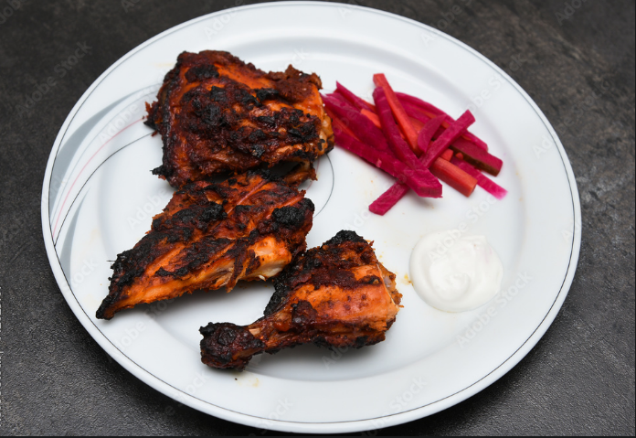

AL-FAHAM

The al-faham is a arabic originated dish popular in the middle east and south asian countries
Recipe
Required items
- Chicken cut in 4 pieces
- Grill
- charcoal 500g
- Mix of chicken masala with onions,pepper,salt
- butter 100g
Procedure
Mix the meat with the masala mix well and put in the freezer for minimum of 2-6 hours
fire up the charcoal which should be placed in an container
arrange the chicken parts carefully and check it doesn't fall off
after all the charcoal emits red sparks place the grill on top
change the side by flipping grill multiple times or by using a gloves at regular time intervals
after an hour put butter on the chicken
if the chicken seem to have cooked take it out safely and start eating